เลือกบริการ
เลือกมิติหรือแพ็กเกจที่คุณอยากสำรวจ

See yourself. More clearly.
มองเห็นตัวเองชัดขึ้น
แล้วค่อย ๆ เลือกเส้นทางในแบบของคุณ

5 มิติแห่งการค้นพบตัวคุณ
เลือกมิติที่อยากรู้จักให้มากขึ้น
ค้นหาตัวตน เข้าใจชีวิต
และออกแบบอนาคตในแบบของคุณ
ภาพชีวิตที่กว้างขึ้น ผ่าน 5 มิติ รวม 27 หัวข้อ
เลือก Bubble รอบภาพ
เพื่อสำรวจแต่ละด้านของชีวิต
ขยับเมาส์เพื่อสำรวจ · คลิก Bubble เพื่อดูรายละเอียด
หัวข้อด้านบนเป็นภาพรวมของบริการ สอบถามรายการครบ 27 หัวข้อ รูปแบบ และระยะเวลาก่อนนัดหมาย
เลือกมิติหรือแพ็กเกจที่คุณอยากสำรวจ
สอบถามช่วงเวลาที่สะดวกผ่านช่องทางของ THE NAME
เตรียมข้อมูลพื้นฐานตามที่ผู้ให้บริการแจ้ง
พูดคุยผ่านรูปแบบและช่องทางที่ตกลงไว้
นำมุมมองที่ค้นพบไปทบทวนเส้นทางของตัวเอง
ผู้ที่อยากสำรวจตัวตน ความสัมพันธ์ ศักยภาพ หรืออยากมีพื้นที่ทบทวนแนวทางชีวิตของตัวเอง
โครงสร้างบริการแบ่งเป็น 5 มิติ รวม 27 หัวข้อ สามารถสอบถามรายการหัวข้อ วิธีการวิเคราะห์ และรูปแบบผลลัพธ์จากผู้ให้บริการก่อนตัดสินใจ
แจ้งประเด็นที่คุณอยากสำรวจ และสอบถาม THE NAME ว่าต้องเตรียมข้อมูลส่วนตัวใดสำหรับบริการที่เลือก ก่อนยืนยันนัดหมาย
เริ่มจากสิ่งที่คุณอยากรู้จักให้มากขึ้น